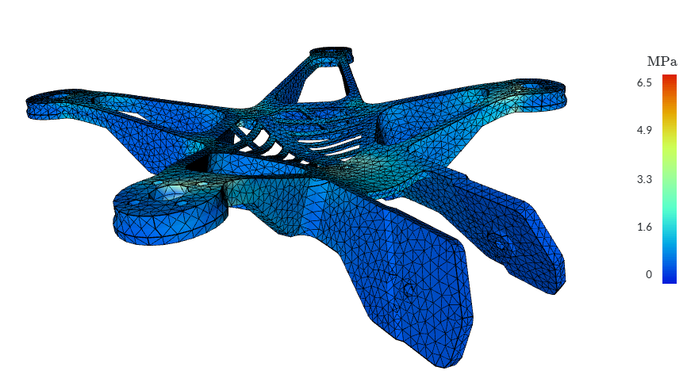
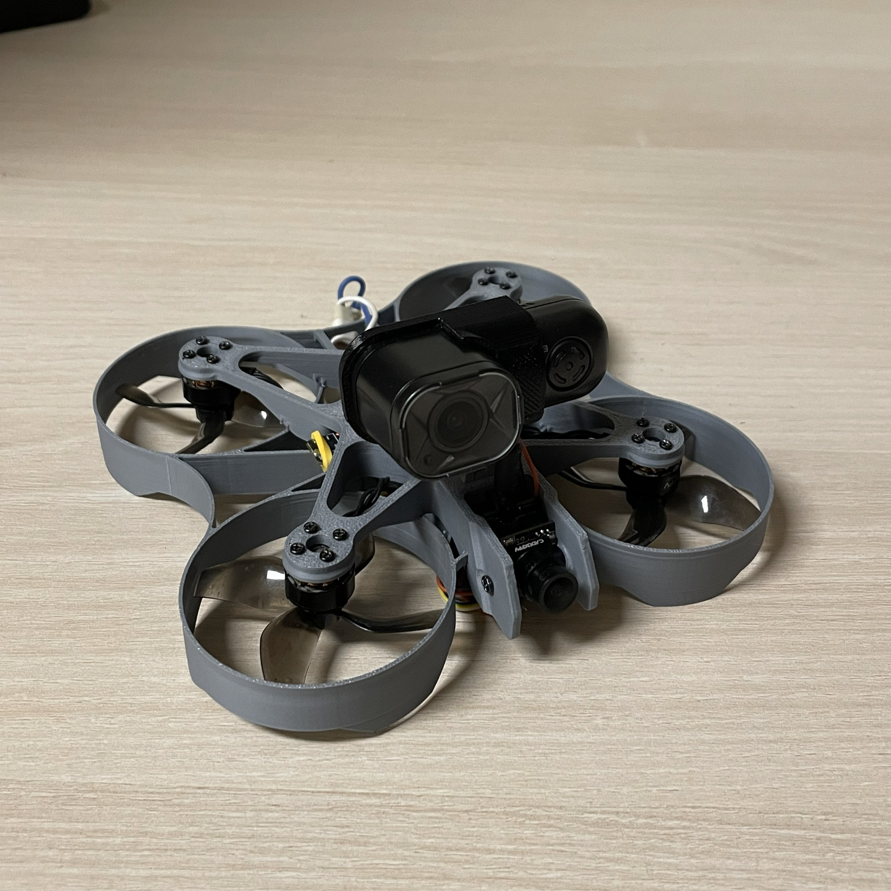
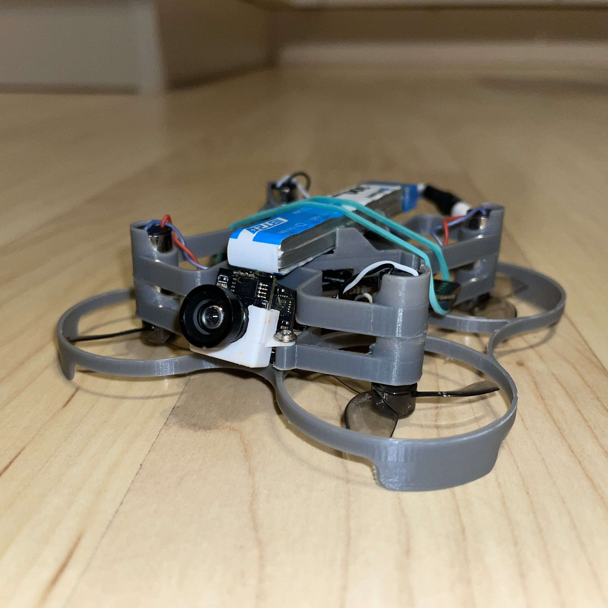
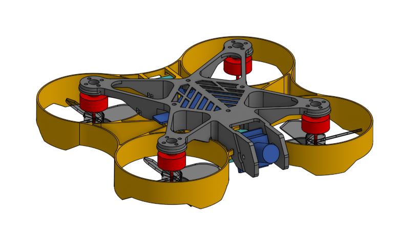

Craddle design for CAESAR artillery piece
University project · ENSTA 2025 · Abaqus, Catia, Python
The cradle is the structural component connecting the chassis to the artillery barrel on the CAESAR self-propelled gun. This project was carried out by a two-student team under the guidance of engineers from KNDS (Nexter). Our primary challenge was the accurate modelling of welded joints subjected to dynamic and multi-directional loading. Because several aspects of the system are confidential, only a redacted version of the report can be shown.
- Determined load cases value from real-life measurements using Python algorithms including differential equations resolution.
- Designed CAD models of the craddle with real-life assembly constrainsts consideration.
- Performed finite element analysis of welded joints with validation based on FAT90 criteria.
- Conducted fatigue assessment of the design based on Manson–Coffin models following CETIM recommendations.
View part of the report and programs on GitHub

Robotization of a BMW 120D gearbox
University project · ENSTA 2024 · Python, OnShape, Catia
This project aimed to convert a manual BMW gearbox into an automated system using actuator-driven gear selection. Our team of four students divided responsibilities, and I was primarily in charge of CAD modelling and python-based simulations.
- Optimization of 0-100kph performance using Python.
- Design of actuators on a simplified gearbox model using OnShape and Catia V5.
- Improving efficiency using engine map based strategies on a Worldwide harmonized Light vehicles Test Procedure (WLTP) cycle.
View report and programs on GitHub

USV launch system
University project · ENSTA 2024 · RDM7, Abaqus, Catia, Python
Designed a launch mechanism for Unmanned Submersible Vehicles (USVs) for Ewan Lebourdais, official photographer of the French Navy, to support underwater photography operations. The design is similar to a crane.
- Performed pre-dimensioning of the structure using RDM7 and defined preliminary load cases.
- Developed CAD models with a strong focus on manufacturability and ease of assembly.
- Modeled joint behaviour and wear mechanisms to ensure long-term reliability in marine environments.
- Evaluated bearing durability according to ISO 281 guidelines.
- Conducted a frequency analysis of the USV support and balancing system to validate operability in Force 4 sea conditions.
View the report on GitHub

Low-hardware 3D-printed fishing reel
Personnal project · 2025 · OnShape, Bambustudio
I designed a fully 3D-printed baitcaster fishing reel in my free time using OnShape, focusing on super easy assembly with wedge-fit parts, a single ballpoint pen compression spring, and practical features like a 4:1 planetary gearset, automatic clutch, and adjustable disc brake; I now sell the files on Cults3D (5€) where they have already generated 60€ in passive income.
-
I engineered every part to fit together using simple wedges and only one extra component—a standard ballpoint pen compression spring—so assembly stays clean, intuitive, and stress-free.
-
I created a clear assembly guide with a step-by-step tutorial and detailed print settings, helping you tune infill and orientation for better stress resistance on the most loaded parts.
-
I optimized the mechanics with a custom 4:1 planetary gearset, an automatic clutch that re-engages when cranking, and an adjustable disc brake, bringing real reel functionality to a fully printable design available on Cults3D (View the 3D-model's page).
View the STL files and assembly guide on GitHub
4k FPV drone
Personnal project · 2025 · OnShape, Bambustudio, CAEplex


I developed a fully custom ultralight drone frame designed to carry standard FPV components and a 4K action camera for event-filming applications. The airframe is compact enough for safe indoor flights yet powerful and stable in outdoor environments.
To optimize performance, I used finite element analysis (FEA) to increase structural stiffness and durability while minimizing mass. The final frame weighs 50 g, meeting my design target of <55 g to maximize flight time with dual 550 mAh 1S LiPos, and remaining safely under the 250 g EU regulatory limit.
The frame integrates several functional features:
- Thermal-management grid on the top plate, added after diagnosing overheating during a concert shoot.
- Dedicated mount for a RunCam Thumb Pro W 4K camera.
- Clean component layout for motors, flight controller, FPV system, and power distribution.


I built this setup to achieve professional-grade footage at minimal cost (~220€ total compared to nearly 1000€ for commercial alternatives such as the DJI Avata or BetaFPV Pavo Pico). The drone has been flown successfully at events including concerts, fashion shows, hotel venues, and rallies. The video below was recorded at one such rally.
Download the CAD files on GitHub